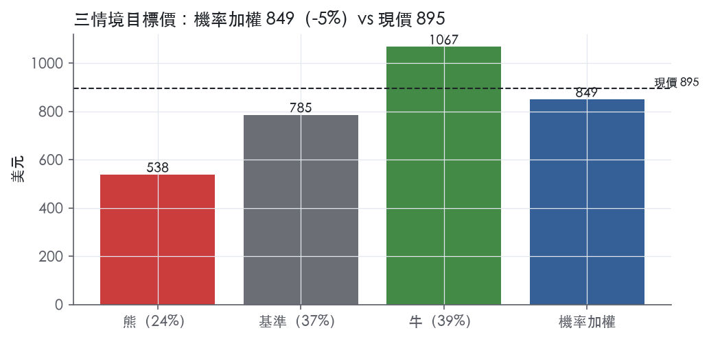
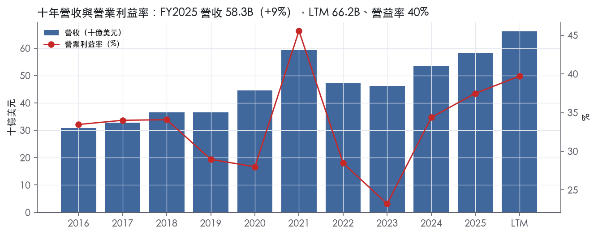
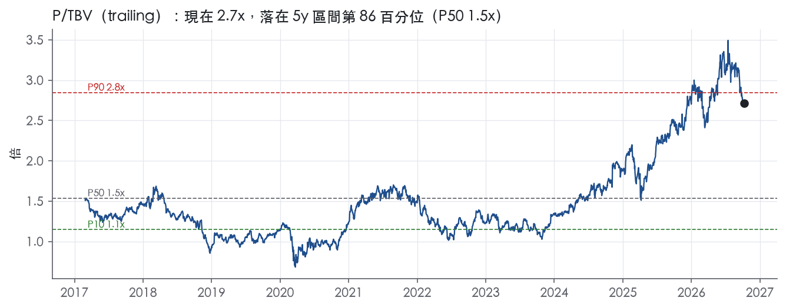
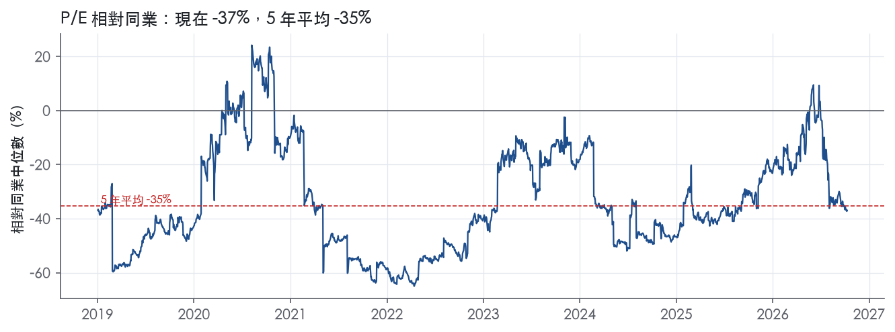
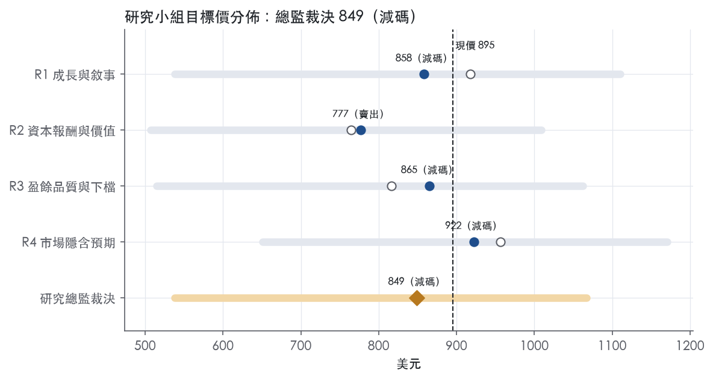
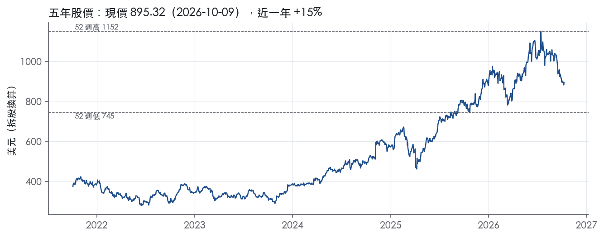

評等總表 › 金融 › GS
ROTCE 自高點正常化，倍數回 2.2x，看空｜評等 減碼｜目標價 849
| 評等 | 減碼（邊界，鄰近賣出） |
| 12 個月目標價 | 849 美元 |
| 現價 | 895.32 美元（2026-10-09） |
| 預期報酬 | 股價 -5.2%＋股息 2.0%＝總報酬 -3.2%；同業籃門檻 10.2%，超額 -13.4% |
| 估值方法 | P/TBV 2.2x，套在一年後的有形淨值 |
| 三情境 | 熊 538／基準 785／牛 1067 |
| 研究流程 | 四位研究員兩輪辯論＋研究總監裁決 |
| 資料來源 | SEC EDGAR XBRL、Tiingo、FRED（全免費） |
ROTCE 自高點正常化，倍數回 2.2x，看空（研究總監裁決，四位研究員兩輪辯論後）
評等 減碼（邊界，鄰近賣出）｜12 個月目標價 849 美元（總監三情境機率加權 836 與研究員中位數 862 各半）｜現價 895.32（2026-10-09）
預期報酬：股價 -5.2%＋股息 2.0%＝總報酬 -3.2%。同業籃門檻 10.2%，超額 -13.4%，離賣出的分界不到三個百分點，屬邊界評等（落在其他級距的機率約四成）。
估值方法：P/TBV 2.2x，套在一年後的有形淨值。三情境：熊 538（24%）／基準 785（37%）／牛 1067（39%）。
什麼會讓研究總監改變看法：FY2026Q3 與 Q4 連續兩季 ROTCE ≥22%、效率比 <60% 且無提列回沖，正常化 ROTCE 上修到 21%、倍數 2.5x、轉中性；dv.credit_cost 轉正提列或 FY2026Q3 FICC 年減，加深看空。
| 過去四季（實際，FY2026Q2） | 未來四季 | 第 5–8 季 | 第 9–12 季 | |
|---|---|---|---|---|
| 淨營收（B） | 66.2B | 70.8B | 73.7B | 78.1B |
| 淨營收成長 | 17.8% | 7.0% | 4.0% | 6.0% |
| 稅前利益率 | 39.7% | 37.0% | 36.0% | 36.0% |
| EPS（美元） | 65.32 | 72.87 | 76.02 | 83.07 |
| EPS 成長 | 42.8% | 11.6% | 4.3% | 9.3% |
| 每股股息（美元） | 17.00 | 17.00 | 17.00 | 17.00 |
| ROTCE | 20.0% | 20.5% | 20.6% | 21.5% |
| 每股有形淨值（美元） | 344.64 | 356.97 | 370.62 | 389.47 |
| P/E（現價） | 13.7x | 12.3x | 11.8x | 10.8x |
| P/TBV（現價） | 2.6x | 2.5x | 2.4x | 2.3x |
| 股息殖利率（現價） | 2.0% | 1.9% | 1.9% | 1.9% |
過去四季為申報數字；預測為研究總監的假設、程式計算。倍數與殖利率都用現價計算，用來看現價對應各期獲利的高低。
| 情境 | 機率（歷史） | 故事 | 未來四季營收成長 | 第 5–8 季稅前利益率 | 倍數 | 目標價 | 股價漲跌 |
|---|---|---|---|---|---|---|---|
| 熊 | 24%（22%） | 對應風險表第 1 條交易收入順週期反轉與第 3 條關係型貸款／併購融資信用成本出現，FICC／Equities 季營收年減、效率比回到 65% 以上，ROTCE 回到 12 季均值 14.8%，倍數取公式 1.6x | -6.0% | 29.0% | 1.6x | 538 | -40.0% |
| 基準 | 37%（38%） | 峰值降速、回沖基期消失，Q5–Q8 ROTCE 回到約 19%，倍數由現行 2.7x 下修至 2.2x | 7.0% | 36.0% | 2.2x | 785 | -12.3% |
| 牛 | 39%（40%） | FY2026 上半年水準持續一年，無回沖下營益率守 40%，市場按 NTM ROTCE 23% 付公式倍數 2.9x（取 R3 牛情境，稅率改照基準 21.4%） | 14.0% | 39.0% | 2.9x | 1067 | 19.2% |
目標價由程式依研究總監的驅動與倍數計算；機率由研究總監給定。括號內是歷史頻率：把這檔股票過去十年 12 個月報酬的波動形狀，置中在基準情境，結果落在各情境附近的比例。

四位研究員用不同方法各自估值，回應研究總監的質疑後交出第二輪，最後由總監逐點裁決。各研究員的主張見第七章，裁決理由見第八章，完整論證見《研究底稿》。
| 立場（一輪→二輪） | 加權目標價（一輪→二輪） | 評等（一輪→二輪） | 第二輪倍數 | 熊～牛目標價 | |
|---|---|---|---|---|---|
| R1 成長與敘事 | 中性→看空 | 918→858 | 減碼→減碼 | 2.2x | 538～1110 |
| R2 資本報酬與價值 | 看空→看空 | 764→777 | 賣出→賣出 | 2.0x | 507～1009 |
| R3 盈餘品質與下檔 | 中性→看空 | 816→865 | 賣出→減碼 | 2.3x | 515～1062 |
| R4 市場隱含預期 | 中性→看空 | 956→922 | 中立→減碼 | 2.3x | 651～1171 |
| 研究總監裁決 | 看空 | 849 | 減碼 | 2.2x | 538～1067 |
目標價由程式依各自的驅動與倍數計算；評等＝機率加權總報酬 − 同業籃門檻。
Goldman Sachs 是一家全球性金融機構，為企業、金融機構、政府與個人提供廣泛的金融服務¹。公司是一家銀行控股公司（BHC）與金融控股公司（FHC），受聯準會（FRB）監管，旗下美國存款機構子公司 Goldman Sachs Bank USA 為紐約州特許銀行¹。公司目標是透過「One Goldman Sachs」倡議，以更簡便、全面、有效率的方式將全部服務與專業知識提供給客戶¹。本質上這是一家以機構客戶為主、靠做市與承銷賺手續費與價差，疊加財富管理與少量消費金融的綜合投行。截至 2025 年 12 月，公司員工數 47,400 人，在逾 35 個國家設有辦公室，50% 員工在美洲、20% 在歐非中東、30% 在亞洲¹。FY2025 全年營收 58.28B 美元，年增 8.9%；LTM（至 FY2026Q2）營收已達 66.20B 美元，顯示近幾季動能明顯加速。
公司管理與報告三個業務分部：Global Banking & Markets（全球銀行與市場）、Asset & Wealth Management（資產與財富管理）、Platform Solutions（平台解決方案）¹。
Global Banking & Markets 收入來源包括投資銀行業務費用（顧問、股權與債權承銷）、FICC（固定收益、外匯與商品）中介與融資活動、股票中介與融資活動，以及關係型貸款與併購融資（及相關避險）、與 Global Banking & Markets 相關的投資活動，以及交易銀行業務¹。公司在顧問業務上長期居領先地位，承銷業務在全球普通股公開發行與全球 IPO 市場長期保持領先地位¹。FICC 的產品線涵蓋利率產品、信用產品、抵押貸款相關產品、外匯與商品；Equities 業務涵蓋股票與股票相關產品做市、以及主經紀融資（prime financing）等¹。三個分部各自佔營收比重 10-K 未揭露【判，依規則6標註】。
Asset & Wealth Management 提供投資服務，協助客戶保存並增長金融資產、達成財務目標，服務對象包括機構與個人客戶，部分個人客戶透過第三方分銷網路接觸公司產品¹。該分部收入來自管理及其他費用、激勵費用（incentive fees）、私人銀行與借貸、以及投資活動¹。公司也透過 Marcus by Goldman Sachs 向消費者吸收存款¹。管理及其他費用「絕大多數為對所管理客戶資產收取的資產基礎費用」¹。
Platform Solutions 的收入幾乎全部來自向 Apple Card 客戶發行信用卡與吸收存款的活動，以及已退出業務的相關活動¹。2025 年 12 月，公司已與另一家發卡機構簽署協議，將 Apple Card 專案轉移出去，轉換預計在約 24 個月內完成；2025 年公司也已將通用汽車（GM）信用卡專案出售給另一家發卡機構¹。公司自 2023 年起已採取多項行動縮小消費金融相關業務焦點，Apple Card 轉移完成後將基本上完成此項聚焦收斂¹。Platform Solutions 正在被公司主動收斂、長期趨勢是縮小規模而非成長引擎。
客戶群以機構為主：企業、金融機構、政府、州與市政機構，公司尋求與這些多元化全球機構客戶建立長期關係¹。在 Global Banking & Markets，顧問與承銷活動是公司與機構客戶的主要初始接觸點¹。公司透過全球銷售團隊維繫客戶關係，並透過包括 Marquee 的技術平台提供市場情報、風險分析、專有數據集與跨資產類別交易執行¹。Global Investment Research 業務截至 2025 年 12 月對全球約 3,000 家公司及約 50 個國家經濟體提供基本面研究¹。
在 Asset & Wealth Management，公司服務機構與個人客戶，個人客戶多透過全球第三方分銷網路接觸公司產品；財富顧問服務主要針對超高淨值客戶，包括個人、家族、家族辦公室、基金會與捐贈基金，客戶關係多透過雇主財務健康計畫或企業轉介建立¹。地區分布上，公司總部設於美國，並在倫敦、法蘭克福、巴黎、東京等主要金融中心及班加羅爾、鹽湖城、達拉斯、新加坡、華沙、伯明罕、海德拉巴等戰略據點營運，截至 2025 年 12 月 45% 員工在戰略據點工作¹。10-K 並未按地區揭露營收拆分。通路上公司依賴機構直接關係、電子交易平台、以及第三方分銷網路並行，顯示機構業務與財富管理客戶取得邏輯不同，但同受惠於 One Goldman Sachs 跨部門交叉銷售策略。
FY2025Q3（截至 2025-09-30）營收 15.18B 美元，年增 19.6%，營益率 35.5%，EPS 12.25（is/dv 對應 FY2025Q3 相關 fact id）【判，數字取自資料包 is.revenue/eps.FY2025Q3】。
FY2025Q4（截至 2025-12-31，推導）營收 13.45B 美元，季減且年比下滑 3.0%，但營益率擴大至 43.5%，EPS 14.54，ROTCE 達 17.0%，效率比惡化至 72.3%。
FY2026Q1（截至 2026-03-31）營收回升至 17.23B 美元，年增 14.4%，營益率 37.7%，EPS 17.55，ROTCE 跳升至 21.3%。
FY2026Q2（截至 2026-06-30，最新一季）營收 20.34B 美元，年增高達 39.5%，為近八季最高單季營收與年增幅度，營益率 42.1%，EPS 20.98，ROTCE 大幅提升至 25.5%，效率比改善至 57.4%，每股有形淨值（tbv_ps）344.64（資料包 FY2026Q2 相關 fact id）。沒有取得新聞稿，公司對下一季的原文指引無法引用，10-K 與資料包均未揭露逐季前瞻指引語句。整體看，近四季營收與 ROTCE 呈現明顯上升趨勢，FY2026Q2 是近兩年獲利能力最強的一季。
公司在 10-K 中稱其目標是透過「One Goldman Sachs」倡議，以更易取得、更全面、更有效率的方式，跨業務與產品線，為客戶提供完整服務與專業能力¹。在 Asset & Wealth Management，公司持續從資產負債表上的直接投資，轉向以第三方基金為主的規模化業務模式¹。公司在 Platform Solutions 的策略明確是收斂：自 2023 年起已採取多項行動縮小消費金融相關業務焦點，並透過 Apple Card 專案轉移與 GM 信用卡出售，基本上完成此聚焦收斂¹。在永續金融上，公司於 2019 年宣布在 2030 年初以前部署 7,500 億美元的永續融資、投資與顧問業務，並已達成該目標¹。
公司的看法是：核心成長引擎仍是 Global Banking & Markets 的做市與投行業務規模優勢，疊加 Asset & Wealth Management 往輕資本、收費型的第三方基金模式轉型，兩者合計構成公司長期淨值複利的主軸。Platform Solutions 的收斂是明確減項而非成長故事，投資人應將其視為一次性出清而非業務引擎。近四季 ROTCE 由 FY2025Q4 的 17.0% 一路攀升至 FY2026Q2 的 25.5%，顯示交易與投行業務的週期性回升正在驅動整體獲利能力改善。

Goldman Sachs 評為窄護城河，趨勢穩定。優勢來自兩處：投行與股權承銷的專營品牌，以及全球資本承諾能力加上多司法管轄區牌照構成的效率規模。這兩項足以讓股東回報在多數年份貼近或高於資本成本，但不足以支撐十年期的把握。量化底稿顯示，ROE 十年平均只比資本成本代理值高 1.0%，有資料的 9 年中只有 4 年高於資本成本，這是不給寬評級的直接原因。
站得住的優勢只有兩類：無形資產與效率規模。
無形資產（品牌與專營地位）：公司多年來在併購、分拆、重組等策略顧問業務居於領先，尤其擅長需要多項服務與跨境架構的大型複雜交易¹。股權承銷方面，公司經常取得大型複雜交易的委任，並多年在全球普通股公開發行與全球 IPO 保持領先地位¹。在大型、首次與跨境交易中，發行人董事會買的是「不出錯」的聲譽，這種品牌溢價無法靠降價複製。品牌靠人才與文化延續：管理委員會成員平均年資約 23 年，近 45% 的合夥人是校園招募出身¹。
效率規模（資本承諾與全球牌照）：公司表示，願意在廣泛產品中做市、承諾資本並承擔風險，是維繫客戶關係的關鍵¹。在中型公司債、新興市場貨幣等流動性較低的市場，價差與費用通常高於高流動性市場¹。公司因被指定為 G-SIB 而適用「Category I」標準，並在美國、歐盟、英國、日本分別持有券商、銀行與掉期交易商等受監管實體¹。全球機構做市與主經紀業務，只有資產負債表與牌照網都夠大的少數業者能供給，新進者很難以合理報酬切入，這是典型的效率規模。
轉換成本、網路效應與成本優勢不列入。Marquee 平台提供市場情報、風險分析與跨資產交易執行¹。但公司同時承認，競爭者可能開發出客戶體驗更好的技術平台¹。因此平台黏性不足以構成轉換成本。
數字只部分支持窄護城河，完全不支持寬護城河。ROE 最新 13.9%，十年平均 11.2%，標準差 4.3%，最低 5.1%，最高 21.0%。對照資本成本代理值 10.2%，十年平均超額只有 1.0%，9 年中僅 4 年超過。稅前利益率十年平均 32.8%，標準差 5.8%，區間在 23.2% 到 45.6% 之間。淨營收成長的標準差 14.4%，最差一年為 -20.2%。整體形狀是「高度週期、平均略高於門檻」，而不是寬護城河該有的「穩定且大幅高於門檻」。
衝突很明確：我們主張的品牌與規模優勢，在 ROE 上只換來約一半年份的超額報酬。我們仍維持窄評級、不下修為無，理由有三。
第一，資本成本代理值是用目前 10 年期公債 5.22加 5% 算出，套用到過去低利率年份會墊高當年門檻，「9 年中 4 年」的計數偏嚴。
第二，稅前利益率最低點 23.2% 仍是可觀的正值，代表谷底年份是獲利縮水而非虧損，專營地位在下行期仍保有定價力。
第三，消費金融這個拖累正在移除。Platform Solutions 的收入幾乎全部來自 Apple Card 與已退出業務，Apple Card 專案預計約 24 個月內完成轉移¹。
近季 ROTCE 由 FY2024Q3 的 11.0%升至 FY2026Q2 的 25.5%。這段上升與投行及交易週期高度同步，不能當成護城河變寬的證據，所以趨勢判為穩定而非變寬。
最大的侵蝕力量是價格競爭與交易電子化，其次是資本規則與大型對手的資本規模。公司表示，投行、做市、財富管理與資產管理業務都承受競爭者搶市占帶來的價格壓力¹。電子交易比重上升壓低了交易佣金，公司預期這個低佣金趨勢會延續¹。價格競爭也壓縮了買賣價差，已對做市業務造成影響¹。費用較低的被動投資策略日益普及，改變了資產管理產品的定價態勢¹。
公司也必須與規模更大、資本更多、在美國以外根基更深的金融機構競爭¹。部分客戶認為獨立顧問公司的利益衝突較少¹。公司還面臨以不相稱的報酬承諾資本、藉此保住市占的壓力¹。美國實施 Basel III 修訂版（含 FRTB）的規則仍待重新提案¹。上述資本承諾壓力與資本規則，會直接拉高效率規模的維持成本，是 ROE 向資本成本靠攏的主要路徑。
目標倍數應相對同業持平，不給溢價。目前 P/TBV 2.7x 位於近五年第 86.1 百分位，遠高於五年中位數 1.5x；市場已在為週期高點的 ROTCE 付費，而窄護城河無法保證這個水準延續。估值錨應放在 P/E（現為 13.7x，五年中位數 15.1x）與正常化 ROE，不應外推 FY2026Q2 的 25.5% ROTCE。
| 指標 | 最新 | 十年平均 | 標準差 | 最低 | 最高 |
|---|---|---|---|---|---|
| ROE | 13.9% | 11.2% | 4.3% | 5.1% | 21.0% |
| 稅前利益率 | 37.5% | 32.8% | 5.8% | 23.2% | 45.6% |
| 淨營收成長 | 8.9% | 8.4% | 14.4% | -20.2% | 33.2% |
程式計算。資本成本代理值（10 年債＋5%）：10.2%；ROE 十年平均減資本成本：1.0%；ROE 有資料的 9 年中，高於資本成本 4 年。
高盛是銀行控股公司，傳統「現金是否跟上盈餘」的 CFO／FCF／EBITDA／淨負債框架對它不適用，資料包本身也註明這些欄位對銀行沒有意義、不要引用。改用銀行體質指標來看：ROTCE 從 FY2024Q3 的 11.0% 一路上升到 FY2026Q2 的 25.5%（量化底稿 dv.rotce），效率比在 FY2026Q2 降到 57.4%（量化底稿 dv.efficiency），淨利息收入年化規模由 2.35B 升到 3.95B（量化底稿 dv.net_interest_income），顯示核心交易、投行與資產管理業務動能真實存在。但 FY2025 淨利有一塊是非經常性的信用損失準備金淨釋放，拉高了當年淨利率，這部分不應該全額當作可持續盈餘。
這一節的傳統答案是「不適用」：高盛的 CFO 受附賣回／附買回融資、交易性資產存貨變動與存款流量主導，年度 CFO 從 FY2024 的 -13.21B 到 FY2025 的 -45.15B（is/cf 年度表）這類波動反映的是資產負債表擴張與資金調度，不是盈餘品質惡化。真正該看的是撥備與資產品質：FY2025 提列呆帳損失是淨回沖 $1.11 billion，FY2024 是淨提列 $1.35 billion²。這個回沖主要來自 Apple Card 貸款組合轉列待售時認列的準備金減少 $2.48 billion，部分被年內淨沖銷抵銷²。這是一次性會計事件（轉列待售觸發的準備金重估），不是常態信用改善，拉高了 FY2025 的稅前與淨利。扣除這個效應之後，核心業務的盈餘品質仍穩，因為投資銀行費收入年增 21%（因併購完成量大增）、淨利息收入年增 68%（因利息費用下降快於利息收入）都是經常性驅動²。
沒有取得本季財報新聞稿，因此非 GAAP 調整項只能從 10-K 揭露的項目回答，資訊不如新聞稿完整。10-K 本身揭露的非 GAAP 指標是 ROTE／ROTCE：把平均普通股股東權益 108,726M 扣除商譽 5,915M 與可辨識無形資產 857M，得到平均有形普通股股東權益 101,954M，ROTE 因此是 16.0%，高於 ROE 的 15.0%²。這個調整是資本適足性慣例指標，不是把盈餘「洗白」，可信。另外兩個會影響 GAAP 盈餘可比性的項目：FY2025 有效稅率 21.4%，其中約 $620 million 的稅務利益來自員工股權獎酬結算，單獨拉高稀釋 EPS $1.95、年化 ROE 0.5 個百分點²——這是跟股價與獎酬歸屬時點掛鉤的波動性稅務利益，不是穩定稀釋 EPS 的來源，估值時應打折。FY2025 認列約 $250 million 的裁員相關遣散費²，屬於真實現金成本但一次性，公司並未將其單獨剔除為非 GAAP 項目，是保守的表達。訴訟與法規提列淨額 FY2025 為 $215 million，FY2024 為 $166 million²，屬於經常性的業務成本，應視為真實費用不打折。
資本充足且回饋股東未靠舉債。CET1 資本比率 FY2025 年底為 14.3%（標準法）、15.1%（進階法）²，平均股東權益／平均總資產為 7.0%²，這是銀行固有的槓桿結構，不應套用一般企業的負債比門檻來扣分。FY2025 總計回饋普通股股東 $16.78 billion，其中普通股回購 $12.36 billion、現金股利 $4.42 billion²，每股有形淨值（tbv_ps）從 FY2024Q3 的 321.82 一路升到 FY2026Q2 的 344.64（量化底稿 dv.tbv_ps），顯示回購沒有侵蝕每股有形資產。帳面淨值每股在 FY2025 年底為 $357.60，年增 6.2%²。稀釋股數十年平均年變動 -3.4%、LTM -1.0%（計分表綠燈），是持續回購縮股的結果，對每股盈餘品質正面。
SBC／營收黃燈（LTM 5.2%、三年均 5.1%、十年均 5.5%）：高盛的薪酬結構本就以股權獎酬遞延為主，10-K 說明薪酬與福利費用包含「年末酌定薪酬、股權獎酬攤銷等」²，FY2025 薪酬福利費用 $18,906 million 相對淨營收 $58,283 million（10-K 財報表）比重穩定，SBC 佔比十年來在 4–8.6% 區間波動但沒有持續惡化，屬於投行同業常態，不加回但也不需要額外打折超過計分表已反映的程度。
稀釋股數年變動綠燈：已在資本配置一節說明，回購持續縮股，無攤薄風險，無需進一步解讀。
（股利＋回購）／淨利 LTM 96.0%、三年均 102.5% 綠燈但接近或超過 100%：規則標注 >100% 可能代表「舉債回饋股東」，但高盛 FY2025 CET1 比率 14.3%/15.1% 遠高於監管要求，資本配置是用超額資本而非舉債達成的²，加上淨債務這類指標對銀行本就不適用，所以這條不是真紅旗，是計分表規則對一般企業設計、套用到銀行上產生的假警報。
淨利率 FY2016→FY2017 跳動 -11pp、FY2017→FY2018 跳動 +15pp、FY2020→FY2021 跳動 +15pp、FY2021→FY2022 跳動 -13pp：提供的 10-K Item 7 節錄只涵蓋 FY2023–FY2025，沒有這幾年的原文可以核對，無法用一手資料解釋成因，只能說明高盛淨利率歷史上本就隨市場交易、投資銀行承銷景氣劇烈起伏（FY2021 是史上最旺的交易年、FY2022 轉為緊縮環境），這是產業特性造成的波動而非會計舞弊訊號。近三年（FY2023 23.2%→FY2024 34.4%→FY2025 37.5%，年度表）波動幅度已明顯收斂，且 FY2025 的提升有一部分來自前述 Apple Card 準備金釋放這個可辨識的一次性因素，不是不可解釋的黑箱。
估值應以 GAAP 淨利為基礎，但對 FY2025 應扣除 Apple Card 準備金淨釋放 $2.48 billion 與員工股權獎酬稅務利益 $620 million 這兩塊明確的一次性/波動性利益後再做本益比或 ROTCE 估值，避免用墊高的基期。槓桿本身不是限制倍數的因素——CET1 14.3%/15.1% 高於監管要求，顯示資本結構有餘裕支撐持續的回購與股利，但 trailing P/E 13.7x 已落在十年中位數 13.1x 附近（band.pe 分位 42.9%），顯示市場已大致反映核心盈餘品質，不應再疊加額外的品質折價。P/TBV 2.7x 處於五年 86.1% 高分位（band.p_tbv），代表市場正用 ROTCE 持續上升而非一次性項目在定價，這點與本章結論一致：中品質，核心業務可信，但 FY2025 單年數字需要微調後才適合當估值基期。
| 項目 | LTM | 近三年 | 十年 | 燈號 | 規則 |
|---|---|---|---|---|---|
| SBC／營收 | 5.2% | 5.1% | 5.5% | 黃 | ≤3.0% 綠、>8.0% 紅 |
| 稀釋股數年變動 | -1.0% | -3.9% | -3.4% | 綠 | ≤0.0% 綠、>3.0% 紅 |
| （股利＋回購）／淨利 | 96.0% | 102.5% | 89.4% | 綠 | ≥50.0% 綠、<0.0% 紅 |
程式計算；燈號以 LTM（無則近三年平均）判定。銀行的現金流、淨負債、利息保障是本業，不列入。
| 指標 | FY2025Q1 | FY2025Q2 | FY2025Q3 | FY2025Q4 | FY2026Q1 | FY2026Q2 |
|---|---|---|---|---|---|---|
| 淨利息收入（B） | 2.9B | 3.1B | 3.9B | 3.7B | 3.6B | 4.0B |
| 淨利息收入／平均總資產 | 0.7% | 0.7% | 0.9% | 0.8% | 0.7% | 0.8% |
| 效率比 | 60.6% | 63.4% | 62.3% | 72.3% | 60.5% | 57.4% |
| 信用成本率 | — | — | — | — | — | — |
| 淨沖銷率 | — | — | — | — | — | — |
| 備抵／放款 | — | — | — | — | — | — |
| 放款／存款 | — | — | — | — | — | — |
| ROTCE | 17.9% | 13.6% | 15.1% | 17.0% | 21.3% | 25.5% |
| 每股有形淨值（美元） | 332.89 | 337.14 | 341.31 | 347.51 | 344.76 | 344.64 |
程式依 SEC XBRL 計算；季度流量年化。效率比＝非利息費用÷淨營收（越低越好）；信用成本率＝提列÷放款；淨沖銷率＝淨沖銷÷放款；淨利息收入÷平均總資產不是淨利差（NIM 的分母是生息資產，XBRL 沒有）。CET1 等監理資本比率不在 XBRL，見財報新聞稿。
| 風險 | 觸發指標（看什麼數字、在哪裡看） | 對 EPS 的影響方向與粗略幅度 | 未來 12 個月發生機率 | 出處 |
|---|---|---|---|---|
| 1. 市場波動／交易收入順週期反轉 | FICC 與 Equities 單季營收、ROTCE（dv.rotce）、efficiency ratio（dv.efficiency）季度變化 | 方向：負；幅度：大（FY2025Q4 營收季減且年減3.0%、FY2026Q2 營收年增39.5%，波動本身即證明收入高槽度） | 中 | 研究判斷 |
| 2. 監管資本／SLR 新規提高緩衝要求，壓抑回購與槓桿 | FRB SLR 新規生效日（2026-04-01，可提前採用）、公司 CET1／SLR 比率（10-K Note 20）、SCB 年度結果（2027年前維持現制） | 方向：負；幅度：中（限制資本分配與自由現金流，FCF LTM 已為 -41.52B） | 高 | 10-K 年報 FY2025 Item 1（業務） |
| 3. 信用與交易對手風險（关系型貸款、併購融資、FICC 財務活動） | 信用成本率（dv.credit_cost，目前多期缺值待追蹤）、淨沖銷率（nco_rate）、備抵/放款（allowance_ratio） | 方向：負；幅度：中／大，視信用週期而定（原文未給百分比） | 中 | 10-K 年報 FY2025 Item 1（業務） |
| 4. Platform Solutions（Apple Card）轉移執行風險 | Apple Card 轉移公告進度（原文稱約24個月完成）、Platform Solutions 分部營收變化 | 方向：負；幅度：小／中（分部未揭露佔比，僅確定為收斂非成長引擎） | 中 | 10-K 年報 FY2025 Item 1（業務） |
| 5. 解決方案與破產清算制度（OLA/FDIA）下債權人劣後，增加長期融資成本 | TLAC／eligible long-term debt 比率（10-K Note 20）、SLR buffer 新規（Method 1，50% of G-SIB surcharge） | 方向：負；幅度：小（結構性融資成本上升，非立即盈餘衝擊） | 低 | 10-K 年報 FY2025 Item 1（業務） |
風險一：交易順週期性是最大、最快能反轉的風險。 公司近四季 ROTCE 由 FY2025Q4 的 17.0% 一路攀升至 FY2026Q2 的 25.5%，營收年增率由 FY2025Q4 的 -3.0% 跳到 FY2026Q2 的 +39.5%（dv.rotce、is.revenue 各期）。這種波動幅度本身就是證據：Global Banking & Markets 的 FICC 與 Equities 中介收入高度依賴市場波動與客戶交易量，公司在 10-K 中承認「我們執行高量交易」且「做市活動維持通常為短期的庫存部位」¹，一旦波動率回落或客戶風險偏好轉弱，這部分收入會同步快速收縮，而公司固定成本（人員薪酬為主）調整速度慢，營益率會被壓縮。監測方法：每季看 FICC/Equities 營收與效率比是否同步回落。
風險二：資本監管新規是確定會發生、方向明確的壓力【判為高機率】。 FRB 於 2025 年 11 月通過規則，將 G-SIB 的 SLR 緩衝由現行 2% 改為「G-SIB 附加費的 50%」（Method 1），該規則自 2026 年 4 月 1 日生效，公司已於 2026 年 1 月 1 日提前採用¹。同時 SCB（壓力資本緩衝）現制維持至 2027 年才會依新模型重新計算¹。這類規則直接決定公司可分配資本（股息、回購）的空間，間接壓抑每股盈餘的資本回報效率，但不直接衝擊當期淨利。監測方法：追蹤公司 CET1、SLR 比率揭露（10-K Note 20）與每年 CCAR 結果。
風險三：信用風險集中在關係型貸款、併購融資與私人銀行借貸。 公司在 Global Banking & Markets 從事「關係型貸款與併購融資（及相關避險）」，GS Bank USA 從事「企業貸款（包括槓桿貸款）、有擔保貸款、信用卡貸款、住宅抵押貸款」等¹。資料包中信用成本率、淨沖銷率、備抵/放款比率多期缺值，無法在本報告引用具體數字，但這正說明目前透明度不足，是監測盲點。監測方法：待未來財報揭露後追蹤 dv.credit_cost、dv.nco_rate、dv.allowance_ratio 的趨勢變化。
風險四：Platform Solutions／Apple Card 轉移屬於執行風險而非策略利多。 公司已於 2025 年 12 月與另一家發卡機構簽署協議轉移 Apple Card 專案，預計約 24 個月完成，同時已出售 GM 信用卡專案¹。這個過程存在客戶轉移摩擦、收入確認時點不確定、以及與蘋果及新發卡機構三方協調的執行風險，但因為公司本就打算退出該業務，下檔有限、不構成成長引擎的減損，僅是過渡期雜訊。監測方法：追蹤 Platform Solutions 分部單季營收與轉移進度公告。
風險五：解決清算制度下債權人結構性劣後是長期融資成本議題，非短期 EPS 驅動。 原文明確指出，在 FDIA 架構下，若 GS Bank USA 進入清算，美國分行存款人享有優先權，而債券持有人（非美國分行存款人）可能獲得「遠低於」存款人的清償¹。這會反映在公司長期無擔保債務的發行利差上，屬於資金成本的慢性壓力，不會在單一季度大幅動到 EPS。監測方法：追蹤公司 TLAC／eligible long-term debt 發行利差與比率（10-K Note 20）。
現價 895.32 對應 trailing（過去四季）P/E 13.7x、P/TBV 2.7x（ROTCE 20.0%）、股息殖利率 2.0%。主要估值倍數 P/TBV 現在 2.7x，落在5 年區間第 86 百分位（P10／P50／P90 = 1.1x／1.5x／2.8x）。

把程式的機械基準預測放到現價下，市場付的前瞻倍數是：P/TBV（未來四季） 2.4x、P/E（未來四季） 10.6x、P/TBV（第 5–8 季） 2.2x、P/E（第 5–8 季） 9.3x。
| 倍數 | 現在 | 5 年 P10 | 5 年 P50 | 5 年 P90 | 現在分位 | 全期 P50 |
|---|---|---|---|---|---|---|
| P/E | 13.7x | 6.2x | 15.1x | 18.4x | 42.9% | 13.1x |
| P/TBV | 2.7x | 1.1x | 1.5x | 2.8x | 86.1% | 1.3x |
trailing 倍數（股價 ÷ 過去四季）；分位以每個交易日計算。
同業籃：GLXY, BLK, SCHW, RJF, JEF, HOOD（SIC 6211 同業 24 家中，CY2025 營收最接近的 6 家）。評等門檻 10.2%：同業「倍數不變下持有一年」的隱含報酬中位數（＝ 盈餘殖利率 ×(1＋g)＋g，g 為 5 年營收年複合成長並夾在 −2%～8%），每家夾在 0～15%、P/E 低於 5 倍視為資料可疑而排除，中位數再限制在 10 年債到 10 年債＋5% 之間（同業原始中位數 13.2%）；排除：GLXY（隱含報酬算不出來）、JEF（隱含報酬算不出來）。
| 代號 | 市值 | 5 年營收 CAGR | ROTCE | P/E | 5 年 P/E 中位數 | P/TBV | 隱含報酬 |
|---|---|---|---|---|---|---|---|
| GS | 260.9B | 5.5% | 20.0% | 13.7x | 15.1x | 2.6x | 13.2% |
| GLXY | 3.9B | 8.2% | -16.1% | — | — | 2.3x | — |
| BLK | 167.8B | 29.8% | — | 26.0x | — | — | 12.2% |
| SCHW | 168.2B | 15.4% | 41.4% | 17.5x | 24.0x | 6.9x | 14.2% |
| RJF | 30.4B | 14.3% | 18.1% | 13.8x | 14.8x | 2.4x | 15.8% |
| JEF | 10.2B | 9.5% | 9.3% | — | 18.0x | 1.1x | — |
| HOOD | 99.4B | 36.1% | 23.6% | 48.1x | — | 11.3x | 10.2% |
| 同業中位數 | 14.8% | 18.1% | 21.7x | 18.0x | 2.4x | 10.2% |
全部 trailing，程式以各公司 SEC XBRL 與 Tiingo 行情計算；第一列為本檔。
P/E 相對同業中位數：現在 -36.9%，過去 1 年平均 -19.9%、3 年 -30.4%、5 年 -35.1%。

程式的機械基準（成長率從過去四季年增率三年收斂到 6%、利潤率持平）用 P/TBV 5 年 P50（trailing） 估值得到 572（-36.1%），用現行倍數得到 1011。這兩個數字只是參考點，不是本報告的目標價；研究員對這個定價的回應在第七章。
下表是每位研究員第一輪（各自獨立）與第二輪（回應研究總監的質疑後）的結果。目標價全由程式依各自的假設計算。
| 立場（一輪→二輪） | 加權目標價（一輪→二輪） | 評等（一輪→二輪） | 第二輪倍數 | 熊～牛目標價 | |
|---|---|---|---|---|---|
| R1 成長與敘事 | 中性→看空 | 918→858 | 減碼→減碼 | 2.2x | 538～1110 |
| R2 資本報酬與價值 | 看空→看空 | 764→777 | 賣出→賣出 | 2.0x | 507～1009 |
| R3 盈餘品質與下檔 | 中性→看空 | 816→865 | 賣出→減碼 | 2.3x | 515～1062 |
| R4 市場隱含預期 | 中性→看空 | 956→922 | 中立→減碼 | 2.3x | 651～1171 |
| 研究總監裁決 | 看空 | 849 | 減碼 | 2.2x | 538～1067 |
目標價由程式依各自的驅動與倍數計算；評等＝機率加權總報酬 − 同業籃門檻。
分歧度：第一輪 加權目標價 764～956（區間＝現價的 21%）· 倍數 2～2.6x · 立場 中性×3、看空×1；第二輪 加權目標價 777～922（區間＝現價的 16%）· 倍數 2～2.3x · 立場 看空×4（方向一致）。

| 研究員 | 第二輪主張 | 堅持的理由 |
|---|---|---|
| R1 成長與敘事 | 看空，P/TBV 2.2x，正常化 ROTCE 約 19%，未來一年營收成長 12%。 | 兩位數成長年之後有一半轉負，第二年營收成長只給 4%。 |
| R2 資本報酬與價值 | 看空，P/TBV 2.0x，正常化 ROTCE 18%，四人中倍數最低。 | Apple Card 轉出加上佣金下滑，第二年營收成長只有 2%。 |
| R3 盈餘品質與下檔 | 看空，P/TBV 2.3x，未來一年營收成長只給 4%。 | 季營收會停在 FY2026Q1 的 17.23B，FY2026Q2 的增量留不住。 |
| R4 市場隱含預期 | 看空，P/TBV 2.3x，市場把高峰 ROTCE 當成可持續。 | 熊情境機率給 25%，回沖基期逆風與信用緩衝用完是公司特有理由。 |
每位研究員的逐條回應與完整論證見《研究底稿》（GS_研究底稿_2026-10-12.docx）。
| 分歧點 | R1 成長 | R2 價值 | R3 品質 | R4 預期 | 什麼資料會分出勝負 |
|---|---|---|---|---|---|
| 1. 目標倍數／正常化 ROTCE | 2.2x；Q5–Q8 ROTCE 約 19%，劇本公式推導 | 2.0x；正常化 18%，3y P50 交叉驗證 | 2.3x；帶位置（3y P50 2.0x 與 1y P10 2.4x 之間） | 2.3x；「高十位數」，市場隱含 2.4x 減一檔 | FY2026Q3–FY2027Q2 四季 ROTCE 平均（dv.rotce）：≥21% 撐得起 2.4x 以上，≤17% 才撐得起 2.0x |
| 2. NTM 營收水準（rev_growth_y1） | 12%：前三季基期低 | 9% | 4%：季營收停在 FY2026Q1 的 17.23B | 7%：峰值降速，不外推 FY2026Q2 | FY2026Q3 單季營收落在 17.23B–20.34B 的哪裡 |
| 3. 剔除回沖後的 NTM 營益率 | 37.5%：三季區間中段 | 36% | 36%：效率比 60–63% 由下往上組 | 37%：對照乾淨季 FY2026Q1 37.7% | FY2026Q4 營益率與效率比（dv.op_margin）對回沖季 43.5% |
| 4. 熊情境深度與倍數 | 營收 −6%／0%，營益率 30%，1.6x | 營收 −6%／−8%，27%，1.5x；對應護城河章 | 營收 −12%／−2%，28%，1.6x；FY2022 重演 | 營收 −8%／2%，32%，1.9x | dv.credit_cost 是否轉正提列；FICC／Equities 季營收是否年減 |
| 5. 牛熊機率相對歷史 | 37／41／22（對照 39／41／20） | 38／38／24（＝對照） | 42／41／17（＝對照） | 40／35／25（對照 38／33／29） | 程式對照表；公司特有證據只剩 FY2026Q4 回沖基期逆風與風險表第 1 條 |
分歧一：倍數裁 R1（2.2x）。 四人全部低於市場隱含 2.4x與現行 2.7x（band.p_tbv），分歧在 2.0x 到 2.3x 之間，差別是有沒有從 ROTCE 推出來。R1 寫出 Q5–Q8 ROTCE 約 19%（假設）、正常化區間 15%–20%，代入劇本公式（14.8%→1.6x、23.0%→2.9x）得 2.2x，與他 y2 營益率 36% 一致；他把倍數看成「一年後市場為 Q5–Q8 前瞻 ROTCE 付的價」，口徑正確。R2 代入 18% 卻得 2.0x：公式對 ROTCE 單調遞增，R1 與 R2 的 ROTCE 假設只差 1 個百分點，撐不起 0.2x 的倍數差距，2.0x 其實仍是他第一輪 3y P50的位置，推導與結論沒對上；他另一條「回饋 $16.78B 對市值 260.93B低於 10.2%」把回饋率當股東報酬，漏掉留存收益推動的 TBV 成長，不採。R3、R4 的 2.3x 沒有從 ROTCE 推出，一個是帶位置、一個是「市場隱含減一檔」，缺口是說不出 2.3x 對應什麼 ROTCE。19% 本身有依據：高於 FY2025 四季的 13.6%–17.9%（～Q4），因為消費金融退出與年化淨利息收入由 2.35B 升到 3.95B（FY2026Q2）是結構性的；低於 FY2026Q1 乾淨季的 21.3%，因為那一季已含投行與交易週期上行。
分歧二：NTM 營收裁 R4（7%）。 這是「FY2026Q2 的 20.34B有多少留得住」。R3 的 4% 等於季營收完全回到 FY2026Q1 的 17.23B，把 Q2 增量全當一次性，但他自己承認淨利息收入抬升是結構性的，而 Q1 到 Q2 年化淨利息收入由 3.56B 升到 3.95B（dv.net_interest_income），這部分沒有理由消失。R1 的 12% 要求 NTM 季均營收接近 Q1 與 Q2 的中點，等於假設 Q2 增量一半以上可持續；可是 Q2 是效率比 57.4%、ROTCE 25.5%（dv.efficiency）八季全部最佳的一季，風險章第 1 條把這種季列為順週期高點，R1 沒有分部或在手案量資料證明持續性。R4 的 7% 是「略高於 Q1」：保留結構性的淨利息收入增量，不外推交易收入峰值，FY2021 年增 33.2% 後 FY2022 轉 −20.2%（FY2022）是先例。兩端都缺分部資料，淨利息收入序列是唯一可觀測的結構性成分，它支持中間偏下的路徑。
分歧三：營益率裁 R4（37%）。 四人一致判定 Apple Card 轉列待售減少的 $2.48 billion 準備金²落在 FY2025Q4——效率比 72.3% 與營益率 43.5% 並存（dv.efficiency）只能用大額負提列解釋——LTM 39.7%被墊高，這不再是分歧。分歧在剔除後的水準。FY2026Q1 是唯一既無回沖又非峰值的季度，營益率 37.7%、效率比 60.5%（dv.op_margin）；季營收既裁定略高於 Q1，營益率就沒有理由低於 Q1 的費用結構，37% 已是對 Q2 42.1% 不會重現的保守處理。R3 的 36% 隱含效率比惡化到 60–63%，但 Q1 已是 60.5%，營收不低於 Q1 就沒有惡化機制。R1 的 37.5% 取 35.5%／37.7%／42.1% 三季中段（FY2026Q1、FY2026Q2），區間含峰值季，中段被拉高。
分歧四：熊情境裁 R1。 熊情境必須對應風險表，R2 沒有風險章只能對應護城河章，先排除。R3 的 −12%／28% 是 FY2022 重演，但 FY2022 的 −20.2% 是從營益率 45.6% 的 FY2021（年度表）跌下來，現在的乾淨季起點是 37.7%，回落空間比當年小，R3 沒說明為何幅度相當。R4 的 1.9x 沒有錨：營收 −8%、營益率 32% 隱含的 ROTCE 應低於 FY2025 的水準，公式對應靠近 1.6x 而非 1.9x。R1 的 −6%／0%、營益率 30%、股數 −3%、1.6x 有三個優點：1.6x 是公式在 12 季平均 ROTCE 14.8% 的值，有錨；觸發具體（FICC／Equities 季營收年減、效率比回到 65% 以上、dv.credit_cost 出現並上升），對應風險表第 1、3 條；股數 −3% 承認 CET1 14.3%／15.1%²下買回不會停。
分歧五：機率寫自己的（own），從歷史出發。 四人第二輪已拉回程式對照，只有 R4 熊多 4 個百分點，他的理由（回沖基期逆風、信用緩衝用掉）是公司特有的，我接受方向、不接受幅度。GS 置中分布右偏（P75 +30%、P25 −15%），牛必須高於熊，詳見三情境一節。
漂移處理：沒有退回。 R1 向其他人中位數靠攏 59%（漂移表），四人最高，但六個接受意見全部附證據：G3 的營益率下修來自我轉發的 10-K 回沖事實，G5 的倍數 2.5x→2.2x 是改用我要求的公式方法，不是沒有理由的靠攏，程式也未旗標。R3 靠攏 48%，y2 由 4% 升到 6% 是遠離中位數的邏輯修正，機率是依我要求對齊歷史。R4、R2 靠攏 24%、8%。程式標 R2 的 16.78 對不上來源，實為²的 $16.78 billion 股東回饋；R4 的 38.0 是他第一輪自己的假設值，兩者都不是數字紀律問題。
與機械基準不同的驅動：
目標倍數 P/TBV 2.2x，套在 NTM 期末每股有形淨值，horizon 未來四季。 錨是劇本合理 P/TBV 公式（14.8%→1.6x、23.0%→2.9x）代入 Q5–Q8 正常化 ROTCE 約 19%（假設，R1 的推導），自家 trailing 帶 3y P50 2.0x 與 1y P10 2.4x（band.p_tbv）作交叉驗證。低於市場隱含 2.4x 與現行 2.7x 的理由全是個股的：LTM 含 $2.48 billion 回沖、FY2026Q2 是八季同時最佳的峰值季、正常化 ROTCE 低於市場隱含的 20% 以上。利率已在公式的股東要求報酬（10 年債 5.22%＋5%）算過一次，不再扣；四位研究員也都沒用利率壓倍數。相對同業：P/E 折價 −36.9% 對 5 年平均 −35.1%（同業表）沒有變化，同業中位數被 HOOD 48.1x、BLK 26.0x 拉高，業務最接近的 RJF 13.8x 與 GS 13.7x 平價，所以不做同業收斂，維持折價。
| 情境 | 機率 | 來源 | 營收成長 y1／y2／y3 | 營益率 | 股數 | 倍數 | 故事 |
|---|---|---|---|---|---|---|---|
| 牛 | 39% | R3 | 14%／9%／6% | 40%／39%／38% | −3% | 2.9x | FY2026 上半年水準持續一年，無回沖下營益率守 40%，市場按 NTM ROTCE 23% 付公式倍數 |
| 基準 | 37% | 總監 | 7%／4%／6% | 37%／36%／36% | −3% | 2.2x | 峰值降速、回沖基期消失，ROTCE 回到約 19%，倍數跟著下修 |
| 熊 | 24% | R1 | −6%／0%／5% | 30%／29%／31% | −3% | 1.6x | 風險表第 1 條交易收入順週期反轉＋第 3 條信用成本出現，ROTCE 回到 12 季均值 |
牛取 R3 而非 R1 或 R4：R3 的 14%／40% 大致等於機械基準路徑（13.9%／39.7%），是「市場現在定價的世界成真」，2.9x 有公式錨；R1 的 20%／42% 等於每季都維持 Q2 的 20.34B，R4 的 3.1x 超過公式上緣沒有錨。熊取 R1 的理由見分歧四；兩個情境的稅率都照我的基準 21.4%。
機率從歷史出發：依 R1、R3 第二輪的程式對照（牛高 +38%／+31% 對應 39%／42%，熊低 −33%／−36% 對應 20%／17%），我的牛情境距離落在兩人之間、熊情境距離接近 R1，歷史起點推估約 40／37／23（假設，待程式核對）。我只把熊多給 1 個百分點、牛少給 1 個百分點，公司特有理由是：FY2026Q4 財報（約 2027 年 1 月）要對上 FY2025Q4 含 $2.48 billion 回沖的 43.5% 營益率基期，年比下滑是機械性的；加上風險表第 1 條觸發機率「中」。偏離遠低於 10 個百分點，牛仍高於熊，與置中分布的右偏一致，不延續本部 22 份報告熊高於牛的慣例。
現價隱含 P/TBV NTM 2.4x，對應的 ROTCE 落在公式區間 14.8%–23.0% 的上段，等於市場把 FY2026Q1 的 21.3% 當常態；我們認為常態約 19%，對應 2.2x——差距主要在倍數，驅動是 ROTCE 的持續性。盈餘也差一截：市場若按機械基準的 NTM EPS 84.29（隱含 P/E 10.6x）定價，我們的 7%／37% 比它低，原因是 Q2 峰值與 Q4 回沖同時被基準帶進基期。立場看空、程式評等減碼（基準目標價低於現價、對 10.2% 門檻的超額為負），兩者一致；沒有到賣出，是因為牛機率依歷史必須高於熊，而牛情境只需要「現狀持續一年」就能實現。
現價 895.32 → 點估目標價 785 → 機率加權目標價 836 → 目標價 849，差距拆成五段：成長順延 +116 美元（市場現行倍數 2.7x 一年後持平、獲利照機械基準）；倍數差 -193 美元（總監倍數 2.2x vs 市場持平倍數 2.7x，同一機械基準預測）；盈餘差 -33 美元（總監預測的未來四季有形淨值 100.9B vs 機械基準 103.8B，同一倍數）；情境不對稱 +51 美元（機率加權減點估）；研究小組平均 +13 美元（總監機率加權 836 與研究員第二輪中位數 862 各半）。各段相加等於目標價減現價。本階段未接賣方共識，差距以市場隱含預期為對照。
| 驅動 | 機械基準 | 研究總監 | 差異 |
|---|---|---|---|
| 未來四季營收成長 | 13.9% | 7.0% | -6.9 pp |
| 第 5–8 季營收成長 | 9.9% | 4.0% | -5.9 pp |
| 第 9–12 季營收成長 | 6.0% | 6.0% | ＝ |
| 未來四季稅前利益率 | 39.7% | 37.0% | -2.7 pp |
| 第 5–8 季稅前利益率 | 39.7% | 36.0% | -3.7 pp |
| 第 9–12 季稅前利益率 | 39.7% | 36.0% | -3.7 pp |
| 稅率 | 21.4% | 21.4% | ＝ |
| 股數年變動 | -4.2% | -3.0% | +1.2 pp |
研究總監只寫偏移，未寫的沿用基準。銀行的 D&A、資本支出、SBC 不影響估值，不列。
| 期 | 淨營收 | 成長 | 稅前利益率 | 稅前利益 | 淨利 | EPS | 每股股息 | 期末有形淨值 | 每股有形淨值 |
|---|---|---|---|---|---|---|---|---|---|
| 未來四季 | 70.8B | 7.0% | 37.0% | 26.2B | 20.6B | 72.87 | 17.00 | 100.9B | 356.97 |
| 第 5–8 季 | 73.7B | 4.0% | 36.0% | 26.5B | 20.8B | 76.02 | 17.00 | 101.6B | 370.62 |
| 第 9–12 季 | 78.1B | 6.0% | 36.0% | 28.1B | 22.1B | 83.07 | 17.00 | 103.6B | 389.47 |
程式依上表的驅動計算；季度用最近四季季節性分攤；不含營運資金變動。
估值方法：P/TBV 2.2x，套在一年後的有形淨值。研究總監目標倍數的錨：劇本合理 P/TBV 公式（14.8%→1.6x、23.0%→2.9x）代入 Q5–Q8 正常化 ROTCE 約 19%（假設，R1 推導）；自家 trailing 帶 3 年 P50 2.0x 與 1 年 P10 2.4x 交叉驗證；低於市場隱含 2.4x 與現行 2.7x 因 LTM 含 $2.48B 回沖與 FY2026Q2 峰值季，非利率；相對同業維持 P/E 折價不收斂。
計算：有形淨值（未來四季期末） 100.9B × 2.2x＝權益價值 222.0B，除以未來四季的股數 → 點估目標價 785（-12.3%）；隱含 P/E（未來四季）10.8x、P/E（第 5–8 季）10.3x。
總監三情境機率加權目標價 836，研究員第二輪中位數 862，兩者各半＝目標價 849；預期報酬 股價 -5.2%＋股息 2.0%＝總報酬 -3.2%；減評等門檻 10.2%（同業籃隱含報酬中位數（GLXY, BLK, SCHW, RJF, JEF, HOOD））＝超額報酬 -13.4% → 評等 減碼（超額 >+15% 買進、+5～+15% 加碼、±5% 中立、−5～−15% 減碼、<−15% 賣出）。同一份資料重開研究小組，超額約有正負四個百分點的雜訊（一個標準差，二十檔實測）；以此估計，評等落在其他級距的機率約四成。超額離賣出的分界不到三個百分點，應視為邊界評等。
| 情境 | 機率 | 未來四季成長 | 第 5–8 季成長 | 第 5–8 季稅前利益率 | 有形淨值（未來四季期末） | 倍數 | 目標價 |
|---|---|---|---|---|---|---|---|
| 熊 | 24% | -6.0% | 0.0% | 29.0% | 95.0B | 1.6x | 538 |
| 基準 | 37% | 7.0% | 4.0% | 36.0% | 100.9B | 2.2x | 785 |
| 牛 | 39% | 14.0% | 9.0% | 39.0% | 104.0B | 2.9x | 1067 |
| 主張 | 驗證日 | 看哪個數字 | 門檻 |
|---|---|---|---|
| FY2026Q3 單季營收低於 18.5B，季營收未停在 FY2026Q2 峰值，支持 7% 的 NTM 路徑 | 2026-10-31 | < 18.5B（假設門檻，介於 FY2026Q1 17.23B 與 FY2026Q2 20.34B 之間） | |
| FY2026Q4 無回沖季的營益率不超過 38%，證明 FY2025Q4 的 43.5% 來自準備金回沖 | 2027-02-15 | <= 38% | |
| FY2026Q3–FY2027Q2 四季 ROTCE 平均介於 17% 與 21%，支持 2.2x 對應的正常化 ROTCE 約 19% | 2027-08-15 | dv.rotce 四季平均（FY2026Q3–FY2027Q2） | 17%–21% |
到期由程式結算（第 5 階段帳本）。
內文上標數字對應下列公司申報文件；未標上標的分析與判斷，是研究小組的觀點。報告中的每個數字都經程式逐一核對資料包或原文。
| 期 | 淨營收 | 成長 | 稅前利益率 | 淨利 | EPS | 每股股息 | ROE | ROTCE | 每股有形淨值 | 效率比 | 稀釋股數 |
|---|---|---|---|---|---|---|---|---|---|---|---|
| FY2016 | 30.8B | — | 33.5% | 7.4B | 16.29 | 2.60 | — | 9.9% | 182.35 | 65.9% | 0.4B |
| FY2017 | 32.7B | 6.3% | 34.0% | 4.3B | 9.01 | 2.90 | 5.1% | 5.6% | 177.03 | 64.0% | 0.4B |
| FY2018 | 36.6B | 11.9% | 34.1% | 10.5B | 25.27 | 3.15 | 12.1% | 13.2% | 203.68 | 64.1% | 0.4B |
| FY2019 | 36.5B | -0.2% | 29.0% | 8.5B | 21.03 | 4.15 | 9.4% | 10.6% | 213.69 | 68.1% | 0.4B |
| FY2020 | 44.6B | 21.9% | 28.0% | 9.5B | 24.74 | 5.00 | 10.2% | 11.2% | 231.82 | 65.0% | 0.4B |
| FY2021 | 59.3B | 33.2% | 45.6% | 21.6B | 59.45 | 6.50 | 21.0% | 22.4% | 283.36 | 53.8% | 0.4B |
| FY2022 | 47.4B | -20.2% | 28.5% | 11.3B | 30.06 | 9.00 | 9.9% | 11.0% | 292.92 | 65.8% | 0.4B |
| FY2023 | 46.3B | -2.3% | 23.2% | 8.5B | 22.87 | 10.50 | 7.3% | 8.0% | 304.94 | 74.6% | 0.3B |
| FY2024 | 53.5B | 15.7% | 34.4% | 14.3B | 40.54 | 11.50 | 12.0% | 13.3% | 328.48 | 63.1% | 0.3B |
| FY2025 | 58.3B | 8.9% | 37.5% | 17.2B | 51.32 | 14.00 | 13.9% | 15.8% | 347.51 | 64.4% | 0.3B |
SEC XBRL；每股數據已依拆股換算到現在股數基準。銀行的營業利益＝稅前利益；CFO、FCF、淨負債對銀行沒有意義，不列。
| 期 | 期末 | 推導 | 淨營收 | 稅前利益率 | 淨利 | EPS | 淨利息收入 | 效率比 | 信用成本率 | 淨沖銷率 | ROTCE |
|---|---|---|---|---|---|---|---|---|---|---|---|
| FY2023Q3 | 2023-09-30 | 11.8B | 23.3% | 2.1B | 5.47 | 1.5B | 76.6% | — | — | 7.6% | |
| FY2023Q4 | 2023-12-31 | Q4 | 11.3B | 19.9% | 2.0B | 5.81 | 1.3B | 75.0% | — | — | 5.7% |
| FY2024Q1 | 2024-03-31 | 14.2B | 36.8% | 4.1B | 11.58 | 1.4B | 60.9% | — | — | 15.7% | |
| FY2024Q2 | 2024-06-30 | 12.7B | 30.8% | 3.0B | 8.62 | 2.0B | 67.0% | — | — | 11.6% | |
| FY2024Q3 | 2024-09-30 | 12.7B | 31.4% | 3.0B | 8.40 | 2.3B | 65.5% | — | — | 11.0% | |
| FY2024Q4 | 2024-12-31 | Q4 | 13.9B | 37.9% | 4.1B | 12.32 | 2.3B | 59.6% | — | — | 15.4% |
| FY2025Q1 | 2025-03-31 | 15.1B | 37.5% | 4.7B | 14.12 | 2.9B | 60.6% | — | — | 17.9% | |
| FY2025Q2 | 2025-06-30 | 14.6B | 34.0% | 3.7B | 10.91 | 3.1B | 63.4% | — | — | 13.6% | |
| FY2025Q3 | 2025-09-30 | 15.2B | 35.5% | 4.1B | 12.25 | 3.9B | 62.3% | — | — | 15.1% | |
| FY2025Q4 | 2025-12-31 | Q4 | 13.5B | 43.5% | 4.6B | 14.54 | 3.7B | 72.3% | — | — | 17.0% |
| FY2026Q1 | 2026-03-31 | 17.2B | 37.7% | 5.6B | 17.55 | 3.6B | 60.5% | — | — | 21.3% | |
| FY2026Q2 | 2026-06-30 | 20.3B | 42.1% | 6.6B | 20.98 | 4.0B | 57.4% | — | — | 25.5% |
流量項目由 10-Q 的年初至今數拆成單季；Q4 = 年度 − 九個月。

本報告由 equity-desk 多代理系統產出，建置中版本，僅供內部研究與方法驗證，不構成投資建議。所有數字以 datapack.json 為準。